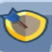

The Werewolf unit in Top Troops is a legendary melee fighter from the Wildling faction, renowned for its devastating abilities and adaptability in battle. Once maxed out, its skills make it a true juggernaut, capable of annihilating enemies, sustaining itself, and becoming increasingly dangerous as battles progress.
This guide will provide an in-depth look at its max-level stats, abilities, and strategic uses, offering tips to unleash the Werewolf's full potential.
Werewolf Unit in Top Troops, a game developed by Socialpoint.
Werewolf Stats Overview
Here’s a breakdown of the Werewolf’s max-level stats:
Stat
Value
Army Power
220.8k
Attack
23.35k
Attack Speed
0.99
Cooldown
6s
Critical Chance
0%
Critical Damage
x2
Range
1.5
Health Points
183,945
Defense
0%
Move Speed
4.2
Block Chance
0%
Life Steal
0.55%
With high attack damage, decent speed, and an excellent health pool, the Werewolf is a versatile and powerful melee unit that dominates in most team compositions.
Werewolf Skill Upgrade Priority Guide - Top Troops
This guide explains how each Werewolf skill works in Top Troops and helps you decide which skills to upgrade first. If you are new or have trouble understanding how skills work, don’t worry — each ability is explained clearly, along with the reason why it should be upgraded earlier or later.
1. Bloody Claws (Main Skill)
How it works: Every 6 seconds, the Werewolf makes two quick slashes, hitting enemies in a small area (radius 2). Each slash deals 50% of his Attack Damage.
Why it’s HIGH priority: This is the Werewolf’s main attack. It happens automatically and often. Upgrading this makes him deal more damage all the time. This skill is the most important because it helps in every fight, no matter what.
2. Moonlight Glow
How it works: Every time the Werewolf kills an enemy, he heals himself based on his Attack Damage.
Why it’s HIGH priority: Healing helps the Werewolf stay alive. If he survives longer, he can attack more enemies. This skill works very well with Bloody Claws because he’ll heal as he deals damage.
3. Feral Instinct
How it works: This skill increases the Werewolf’s movement speed by 80%. He runs faster on the battlefield.
Why it’s MEDIUM priority: Running faster helps the Werewolf reach enemies sooner. It’s useful, but it doesn’t deal damage or heal. Upgrade this after the damage and healing skills.
4. Still Hungry
How it works: Every time the Werewolf kills an enemy, his Bloody Claws skill becomes stronger. The more he kills, the more damage he deals with his slashes.
Why it’s LOW priority: This skill gives extra damage, but only after he gets a kill. It doesn’t help at the start of a battle and only becomes useful later. It’s a good bonus, but not needed early.
Skill Upgrade Priority (from High to Low):
Bloody Claws – Main damage, always active.
Moonlight Glow – Self-healing after kills keeps him alive.
Feral Instinct – Moves faster but doesn’t deal damage or heal.
Still Hungry – Bonus damage only after getting kills.
Gear Evolution Priority for the Werewolf: Focus on Main Stats
Equipping the right gear can significantly enhance the Werewolf’s performance. Here’s the optimal gear priority based on its max-level abilities:
1st - Attack Gear:
Boosts the raw power of Bloody Claws and enhances the healing from Moonlight Glow, since healing scales with attack damage. Essential for both offense and sustain.
2nd - Cooldown Gear:
Reduces the 6-second cooldown of Bloody Claws, enabling the Werewolf to deal AoE damage more frequently within a 90s match, greatly increasing total damage output.
3rd - Life Steal Gear:
Works well with Moonlight Glow by ensuring the Werewolf regenerates health not only from kills but also from continuous damage output, increasing survivability.
4th - Attack Speed Gear:
Improves basic attack frequency, which helps secure more kills to activate Moonlight Glow and generate additional healing from life steal effects.
5th - Health Points Gear:
Provides durability for longer fights, giving the Werewolf more time to activate its skills and self-heal through kills and life steal.
6th - Move Speed Gear:
Allows the Werewolf to quickly close the gap with enemies or reposition during fights, especially useful for targeting squishy or low-health units to trigger healing.
7th - Critical Chance Gear:
While extra damage from critical hits is helpful, it’s less reliable than consistent damage from attack or cooldown boosts, so it’s lower in priority.
8th - Defense Gear:
Provides minor survivability, but the Werewolf’s healing mechanics make defense less impactful than raw HP or life steal.

9th - Block Chance Gear:
Least useful for the Werewolf, who benefits more from healing and offensive pressure than block mechanics.
Talent Priority for the Werewolf
The right talents can take the Werewolf’s performance to the next level. Here are the priorities:
Warewolf Melee Talent Tree, Top Troops.
Damage: Amplifies the power of Bloody Claws and Still Hungry, making the Werewolf a lethal offensive unit.
Attack Speed: Speeds up kill times, maximizing the benefits of Still Hungry and Moonlight Glow while also increasing the Werewolf's DPS.
Team Composition and Battle Strategies
Best Allies for the Werewolf
The Werewolf thrives when paired with supportive and synergistic units:
Frozen Bowman: Freezes enemies, allowing the Werewolf to unleash Bloody Claws without interruption.
Sekhmet: Heals and cast a shield around the Werewolf, ensuring it stays in the fight longer.
Elemental Witch: Provides area-of-effect damage and crowd control, complementing the Werewolf’s capabilities.
Counters and Matchups
Best Matchups: The Werewolf truly shines against multi-population units, particularly when these armies lack strong tanks in their frontline. Its area-of-effect damage allows it to quickly dismantle weaker enemies, snowballing its power as the battle progresses.
Weaknesses: The Werewolf struggles against high-defense units or enemies with high crowd-control potential. Use support units to counter these threats.
Final Thoughts
The Werewolf is a legendary unit that earns its reputation on the battlefield. Its powerful max-level skills, sustainability, and synergy with various team compositions make it an essential choice for any player aiming for victory in Top Troops. With the right strategy, gear, and talents, this Wildling beast will not only dominate battles but become a cornerstone of your army.
FAQs
What makes the Werewolf special in Top Troops?
The Werewolf’s unique combination of area damage, healing, and scaling power makes it a versatile and powerful melee unit.
How should I gear the Werewolf for maximum effectiveness?
Prioritize Attack and Movement Speed to boost damage and mobility. Cooldown Reduction and Life Steal gear further enhance its survivability and skill uptime.
What talents work best for the Werewolf?
Focus on Damage to amplify its raw power and Attack Speed to trigger skills like Moonlight Glow and Still Hungry faster.
What units pair well with the Werewolf?
Support units like the Fairy and crowd-control units like the Frost Mage are excellent allies for the Werewolf.
How can I counter enemies with the Werewolf?
Target multi-population units first to trigger skills like Moonlight Glow and Still Hungry. Use its mobility to chase down high-value targets like ranged enemies or healers.
Is the Werewolf worth upgrading to max level?
Absolutely! Its max-level abilities make it a fearsome addition to any team, capable of dominating most battles with ease.
Did you like our Werewolf Unit Guide for Top Troops? Is there something you didn't understand or would like to suggest changes to? We invite you to join our comment section on the Alexandre Games Blog page. Feel free to express your opinion, clarify your doubts, and share your suggestions. Click the button below to get started:


 Maman Brigitte Guide
Maman Brigitte Guide Frozen Bowman Guide - Top Troops
Frozen Bowman Guide - Top Troops